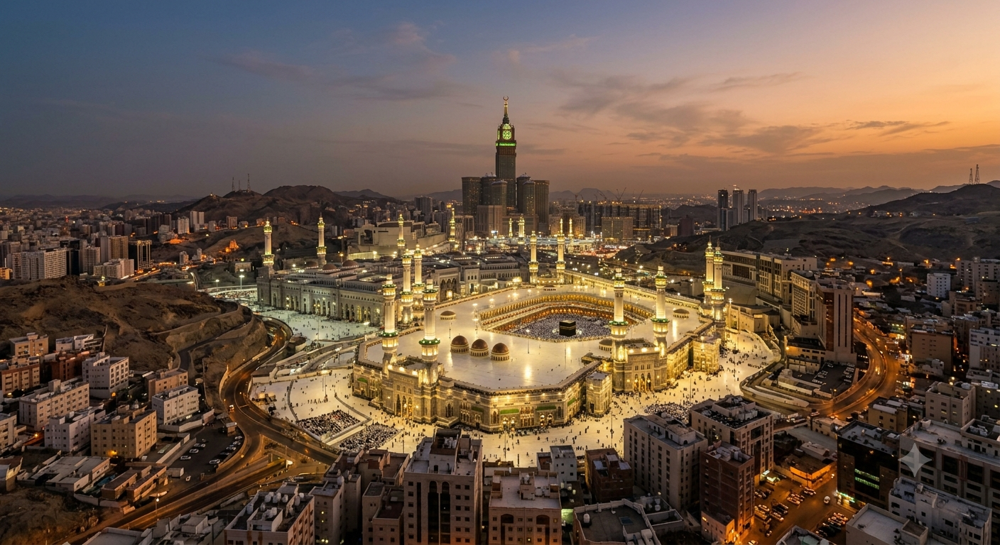

Sejarah Perjalanan
Perjalanan 14+ Tahun Berdedikasi
PT AS-SIDDIQ Tour & Travel didirikan pada tahun 2012 dengan komitmen teguh untuk menghapus kekhawatiran masyarakat akan travel umroh yang tidak bertanggung jawab. Mengusung nama AS-SIDDIQ yang bermakna "Yang Selalu Membenarkan dan Jujur", kami memegang amanah kejujuran dan kepastian layanan dalam setiap helai perjalanan ibadah Anda.
Dimulai dari pemberangkatan 50 jamaah di tahun pertama, kini AS-SIDDIQ telah memberangkatkan lebih dari 15.000 jamaah Haji dan Umroh dari seluruh pelosok Indonesia dengan rasio kepuasan mencapai 98%.
"Kenyamanan ibadah jamaah adalah keberkahan terbesar bagi seluruh keluarga besar AS-SIDDIQ."
